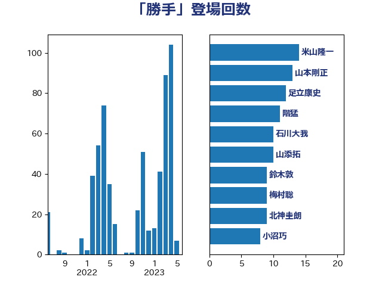

単語「勝手」

| 米山隆一 | 立憲民主党 | 14 回 |
| 山本剛正 | 日本維新の会 | 13 回 |
| 足立康史 | 日本維新の会 | 12 回 |
| 階猛 | 立憲民主党 | 11 回 |
| 石川大我 | 立憲民主党 | 10 回 |
| 山添拓 | 日本共産党 | 10 回 |
| 鈴木敦 | 国民民主党 | 9 回 |
| 梅村聡 | 日本維新の会 | 9 回 |
| 北神圭朗 | 無所属 | 9 回 |
| 小沼巧 | 立憲民主党 | 8 回 |
| 田村貴昭 | 日本共産党 | 7 回 |
| 田島麻衣子 | 立憲民主党 | 6 回 |
| 岡田克也 | 立憲民主党 | 6 回 |
| 吉田統彦 | 立憲民主党 | 6 回 |
| 阿部知子 | 立憲民主党 | 5 回 |
| 赤嶺政賢 | 日本共産党 | 5 回 |
| 谷田川元 | 立憲民主党 | 5 回 |
| 西村康稔 | 自由民主党 | 5 回 |
| 笠井亮 | 日本共産党 | 5 回 |
| 福山哲郎 | 立憲民主党 | 5 回 |
| 田村智子 | 日本共産党 | 5 回 |
| 田村まみ | 国民民主党 | 5 回 |
| 田嶋要 | 立憲民主党 | 5 回 |
| 沢田良 | 日本維新の会 | 5 回 |
| 櫻井周 | 立憲民主党 | 5 回 |
| 森山浩行 | 立憲民主党 | 5 回 |
| 川田龍平 | 立憲民主党 | 5 回 |
| 岩渕友 | 日本共産党 | 5 回 |
| 山田太郎 | 自由民主党 | 5 回 |
| 山本太郎 | れいわ新選組 | 5 回 |
| 山井和則 | 立憲民主党 | 5 回 |
| 宮本徹 | 日本共産党 | 5 回 |
| 大西健介 | 立憲民主党 | 5 回 |
| 伊波洋一 | 無所属 | 5 回 |
| 上田清司 | 国民民主党 | 5 回 |
| 須藤元気 | 無所属 | 4 回 |
| 穀田恵二 | 日本共産党 | 4 回 |
| 石井苗子 | 日本維新の会 | 4 回 |
| 田村憲久 | 自由民主党 | 4 回 |
| 水岡俊一 | 立憲民主党 | 4 回 |
| 梅谷守 | 立憲民主党 | 4 回 |
| 杉尾秀哉 | 立憲民主党 | 4 回 |
| 本村伸子 | 日本共産党 | 4 回 |
| 岡本あき子 | 立憲民主党 | 4 回 |
| 吉良よし子 | 日本共産党 | 4 回 |
| 吉川元 | 立憲民主党 | 4 回 |
| 伊藤岳 | 日本共産党 | 4 回 |
| 齋藤健 | 自由民主党 | 3 回 |
| 高市早苗 | 自由民主党 | 3 回 |
| 赤木正幸 | 日本維新の会 | 3 回 |
| 藤丸敏 | 自由民主党 | 3 回 |
| 篠原孝 | 立憲民主党 | 3 回 |
| 福島伸享 | 無所属 | 3 回 |
| 渡辺博道 | 自由民主党 | 3 回 |
| 掘井健智 | 日本維新の会 | 3 回 |
| 後藤祐一 | 立憲民主党 | 3 回 |
| 川合孝典 | 国民民主党 | 3 回 |
| 岩谷良平 | 日本維新の会 | 3 回 |
| 小田原潔 | 自由民主党 | 3 回 |
| 小川淳也 | 立憲民主党 | 3 回 |
| 城井崇 | 立憲民主党 | 3 回 |
| 吉田豊史 | 無所属 | 3 回 |
| 加藤鮎子 | 自由民主党 | 3 回 |
| 井坂信彦 | 立憲民主党 | 3 回 |
| 井上哲士 | 日本共産党 | 3 回 |
| 高橋千鶴子 | 日本共産党 | 2 回 |
| 青柳仁士 | 日本維新の会 | 2 回 |
| 青山繁晴 | 自由民主党 | 2 回 |
| 鈴木義弘 | 国民民主党 | 2 回 |
| 鈴木庸介 | 立憲民主党 | 2 回 |
| 鈴木宗男 | 日本維新の会 | 2 回 |
| 野間健 | 立憲民主党 | 2 回 |
| 野田聖子 | 自由民主党 | 2 回 |
| 野田佳彦 | 立憲民主党 | 2 回 |
| 逢坂誠二 | 立憲民主党 | 2 回 |
| 西銘恒三郎 | 自由民主党 | 2 回 |
| 芳賀道也 | 国民民主党 | 2 回 |
| 舞立昇治 | 自由民主党 | 2 回 |
| 緑川貴士 | 立憲民主党 | 2 回 |
| 神津たけし | 立憲民主党 | 2 回 |
| 石橋通宏 | 立憲民主党 | 2 回 |
| 石垣のりこ | 立憲民主党 | 2 回 |
| 牧義夫 | 立憲民主党 | 2 回 |
| 牧山ひろえ | 立憲民主党 | 2 回 |
| 浜田聡 | NHK党 | 2 回 |
| 浅田均 | 日本維新の会 | 2 回 |
| 河野義博 | 公明党 | 2 回 |
| 河野太郎 | 自由民主党 | 2 回 |
| 池畑浩太朗 | 日本維新の会 | 2 回 |
| 横沢高徳 | 立憲民主党 | 2 回 |
| 柴愼一 | 立憲民主党 | 2 回 |
| 柳ヶ瀬裕文 | 日本維新の会 | 2 回 |
| 柚木道義 | 立憲民主党 | 2 回 |
| 枝野幸男 | 立憲民主党 | 2 回 |
| 早稲田ゆき | 立憲民主党 | 2 回 |
| 打越さく良 | 立憲民主党 | 2 回 |
| 平林晃 | 公明党 | 2 回 |
| 平木大作 | 公明党 | 2 回 |
| 岸田文雄 | 自由民主党 | 2 回 |
| 山岸一生 | 立憲民主党 | 2 回 |
| 山下芳生 | 日本共産党 | 2 回 |
| 小西洋之 | 立憲民主党 | 2 回 |
| 小熊慎司 | 立憲民主党 | 2 回 |
| 寺田学 | 立憲民主党 | 2 回 |
| 宮本岳志 | 日本共産党 | 2 回 |
| 奥野総一郎 | 立憲民主党 | 2 回 |
| 大島九州男 | れいわ新選組 | 2 回 |
| 大塚耕平 | 国民民主党 | 2 回 |
| 古賀之士 | 立憲民主党 | 2 回 |
| 前川清成 | 日本維新の会 | 2 回 |
| 井林辰憲 | 自由民主党 | 2 回 |
| 中川正春 | 立憲民主党 | 2 回 |
| おおつき紅葉 | 立憲民主党 | 2 回 |
| 齊藤健一郎 | 無所属 | 1 回 |
| 鬼木誠 | 立憲民主党 | 1 回 |
| 馬場雄基 | 立憲民主党 | 1 回 |
| 馬場伸幸 | 日本維新の会 | 1 回 |
| 阿部弘樹 | 日本維新の会 | 1 回 |
| 長妻昭 | 立憲民主党 | 1 回 |
| 鈴木俊一 | 自由民主党 | 1 回 |
| 重徳和彦 | 立憲民主党 | 1 回 |
| 遠藤敬 | 日本維新の会 | 1 回 |
| 道下大樹 | 立憲民主党 | 1 回 |
| 辻清人 | 自由民主党 | 1 回 |
| 辻元清美 | 立憲民主党 | 1 回 |
| 西田昌司 | 自由民主党 | 1 回 |
| 西岡秀子 | 国民民主党 | 1 回 |
| 藤岡隆雄 | 立憲民主党 | 1 回 |
| 蓮舫 | 立憲民主党 | 1 回 |
| 船田元 | 自由民主党 | 1 回 |
| 舩後靖彦 | れいわ新選組 | 1 回 |
| 羽田次郎 | 立憲民主党 | 1 回 |
| 竹詰仁 | 国民民主党 | 1 回 |
| 穂坂泰 | 自由民主党 | 1 回 |
| 礒崎哲史 | 国民民主党 | 1 回 |
| 石井章 | 日本維新の会 | 1 回 |
| 矢倉克夫 | 公明党 | 1 回 |
| 玉木雄一郎 | 国民民主党 | 1 回 |
| 玄葉光一郎 | 立憲民主党 | 1 回 |
| 片山大介 | 日本維新の会 | 1 回 |
| 熊谷裕人 | 立憲民主党 | 1 回 |
| 源馬謙太郎 | 立憲民主党 | 1 回 |
| 渡辺創 | 立憲民主党 | 1 回 |
| 清水貴之 | 日本維新の会 | 1 回 |
| 浜口誠 | 国民民主党 | 1 回 |
| 泉健太 | 立憲民主党 | 1 回 |
| 永岡桂子 | 自由民主党 | 1 回 |
| 櫛渕万里 | れいわ新選組 | 1 回 |
| 横山信一 | 公明党 | 1 回 |
| 森田俊和 | 立憲民主党 | 1 回 |
| 森本真治 | 立憲民主党 | 1 回 |
| 林芳正 | 自由民主党 | 1 回 |
| 松沢成文 | 日本維新の会 | 1 回 |
| 杉本和巳 | 日本維新の会 | 1 回 |
| 本田顕子 | 自由民主党 | 1 回 |
| 本田太郎 | 自由民主党 | 1 回 |
| 末松義規 | 立憲民主党 | 1 回 |
| 有村治子 | 自由民主党 | 1 回 |
| 斎藤アレックス | 国民民主党 | 1 回 |
| 斉藤鉄夫 | 公明党 | 1 回 |
| 志位和夫 | 日本共産党 | 1 回 |
| 徳永久志 | 立憲民主党 | 1 回 |
| 庄子賢一 | 公明党 | 1 回 |
| 川崎ひでと | 自由民主党 | 1 回 |
| 岸真紀子 | 立憲民主党 | 1 回 |
| 山際大志郎 | 自由民主党 | 1 回 |
| 山田賢司 | 自由民主党 | 1 回 |
| 山本有二 | 自由民主党 | 1 回 |
| 山崎誠 | 立憲民主党 | 1 回 |
| 尾崎正直 | 自由民主党 | 1 回 |
| 小野泰輔 | 日本維新の会 | 1 回 |
| 小沢雅仁 | 立憲民主党 | 1 回 |
| 小林鷹之 | 自由民主党 | 1 回 |
| 小山展弘 | 立憲民主党 | 1 回 |
| 小寺裕雄 | 自由民主党 | 1 回 |
| 寺田静 | 無所属 | 1 回 |
| 宮路拓馬 | 自由民主党 | 1 回 |
| 太田房江 | 自由民主党 | 1 回 |
| 大石あきこ | れいわ新選組 | 1 回 |
| 大家敏志 | 自由民主党 | 1 回 |
| 大串博志 | 立憲民主党 | 1 回 |
| 塩川鉄也 | 日本共産党 | 1 回 |
| 堤かなめ | 立憲民主党 | 1 回 |
| 堀場幸子 | 日本維新の会 | 1 回 |
| 國重徹 | 公明党 | 1 回 |
| 嘉田由紀子 | 無所属 | 1 回 |
| 和田有一朗 | 日本維新の会 | 1 回 |
| 吉田とも代 | 日本維新の会 | 1 回 |
| 吉川沙織 | 立憲民主党 | 1 回 |
| 原口一博 | 立憲民主党 | 1 回 |
| 勝部賢志 | 立憲民主党 | 1 回 |
| 前原誠司 | 国民民主党 | 1 回 |
| 住吉寛紀 | 日本維新の会 | 1 回 |
| 伊藤渉 | 公明党 | 1 回 |
| 仁比聡平 | 日本共産党 | 1 回 |
| 仁木博文 | 無所属 | 1 回 |
| 井出庸生 | 自由民主党 | 1 回 |
| 下野六太 | 公明党 | 1 回 |